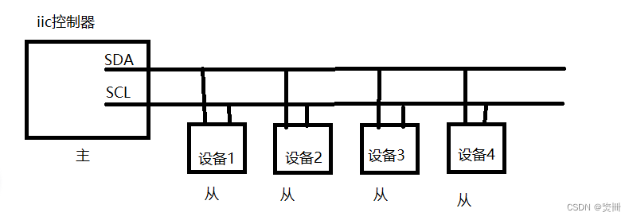

xbl abl串口初始化流程
分析一下xbl abl阶段串口流程
特别说明
UART可用于2线模式（UART）或4线模式（HSUART）：2线UART（低波特率）64B FIFO模式，4线HS UART（高波特率）128B DMA模式，如需支持高波特率一般都是HS_PORT。
SBL1阶段初始化
SBL1阶段就降串口进行了初始化和寄存器配置，流程可以参考0010_qcom_qcm2290_SBL1运行流程.md，以下是串口初始化流程：
QcomPkg/SocPkg/Library/XBLLoaderLib/sbl1_mc.c:
* boot_log_init(boot_log_data);
└── boot_log_init_uart(); //QcomPkg/XBLLoader/boot_logger.c
└── boot_uart_init(); //QcomPkg/XBLLoader/boot_logger_uart.c
└── uart_initialize(); //QcomPkg/XBLLoader/boot_uart.c
├── uart5_c.enable_flow_ctrl = TRUE; //流控打开
└── uart_open(&uart5_debug_handle, UART_HS_PORT, &uart5_c);
├── if(UART_SUCCESS != clock_enable(uart_ctxt)) //时钟使能
├── if(UART_SUCCESS != uart_tlmm_open(uart_ctxt)) //gpio 复用配置
└── register_init(uart_ctxt); //uart寄存器配置
QcomPkg/Library/UartQupv3Lib/UartXBL.c:
static const CLOCK_SETTINGS baud_table[] =
{
// bit_rate, input_freq, divider
{ 115200, 7372800, 64 },
{ 1500000, 96000000, 64 },
{ 3000000, 96000000, 32 },
{0}
};
RETURN_STATUS EFIAPI
uart_initialize(void)
{
uart_open_config c;
c.baud_rate = 115200;
c.parity_mode = UART_NO_PARITY;
c.num_stop_bits = UART_1_0_STOP_BITS;
c.bits_per_char = UART_8_BITS_PER_CHAR;
c.enable_loopback = FALSE;
c.enable_flow_ctrl = FALSE;
c.tx_cb_isr = NULL;
c.rx_cb_isr = NULL;
uart_open_config uart5_c;
//配置uart5 波特率，uart5对应SE1
uart5_c.baud_rate = 1500000/*115200*/;
uart5_c.parity_mode = UART_NO_PARITY;// 无奇偶校验位
uart5_c.num_stop_bits = UART_1_0_STOP_BITS; //1 bit停止位
uart5_c.bits_per_char = UART_8_BITS_PER_CHAR;// 8 bit数据
uart5_c.enable_loopback = FALSE;
uart5_c.enable_flow_ctrl = TRUE; //流控打开
uart5_c.tx_cb_isr = NULL;
uart5_c.rx_cb_isr = NULL;
uart_open(&uart_debug_handle, UART_DEBUG_PORT, &c);
#ifdef HS_PORT_OPEN //高速串口
uart_open(&uart5_debug_handle, UART_HS_PORT, &uart5_c);
#endif
return RETURN_SUCCESS;
}
uart_result uart_open(uart_handle* h, uart_port_id id, uart_open_config* config)
{
if(UART_SUCCESS != uart_get_properties(uart_ctxt))
{
UART_LOG_0(ERROR, "uart_get_properties failed.");
return UART_ERROR;
}
if(UART_SUCCESS != clock_enable(uart_ctxt)) //时钟使能
{
UART_LOG_0(ERROR, "clock_enable failed.");
return UART_ERROR;
}
// If the secondary engine is active, we are in core and loader has already initialized the core.
// So we can skip it.
if(!(REG_IN(uart_ctxt->properties->uart_base + GENI4_CFG, GENI_STATUS) & S_GENI_CMD_ACTIVE))
{
if(UART_SUCCESS != uart_fw_load(uart_ctxt))
{
UART_LOG_0(ERROR, "clock_enable failed.");
return UART_ERROR;
}
if(UART_SUCCESS != uart_tlmm_open(uart_ctxt)) //gpio 复用配置
{
UART_LOG_0(ERROR, "uart_tlmm_open failed.");
uart_close((uart_handle)uart_ctxt);
return UART_ERROR;
}
if(UART_SUCCESS != uart_interrupt_open(uart_ctxt,(void*)uart_isr)) //没干啥
{
UART_LOG_0(ERROR, "uart_interrupt_open failed.");
uart_close((uart_handle)uart_ctxt);
return UART_ERROR;
}
register_init(uart_ctxt);
}
}
uart_result uart_tlmm_open(uart_context* h)
{
Tlmm_ConfigGpioGroup(DAL_TLMM_GPIO_ENABLE,(DALGpioSignalType*)&h->properties->gpio_tx_config, 1);
Tlmm_ConfigGpioGroup(DAL_TLMM_GPIO_ENABLE,(DALGpioSignalType*)&h->properties->gpio_rx_config, 1);
Tlmm_ConfigGpioGroup(DAL_TLMM_GPIO_ENABLE,(DALGpioSignalType*)&h->properties->gpio_cts_config, 1);
Tlmm_ConfigGpioGroup(DAL_TLMM_GPIO_ENABLE,(DALGpioSignalType*)&h->properties->gpio_rfr_config, 1);
return UART_SUCCESS;
}
void register_init(uart_context* uart_ctxt)
{
volatile uint32 base = uart_ctxt->properties->uart_base;
uint32 temp;
temp = REG_IN(base + QUPV3_SE_DMA, SE_HW_PARAM_0); // to get TXFIFO size
tx_fifo_size = ((temp & TX_FIFO_DEPTH_MASK) >> TX_FIFO_DEPTH_SHIFT << 2); // It will be in words.
// so << 2.
REG_OUT(base + GENI4_DATA, GENI_TX_WATERMARK_REG, 4);
temp = REG_IN(base + QUPV3_SE_DMA, SE_HW_PARAM_1);// to get RXFIFO width
temp = (temp & RX_FIFO_DEPTH_MASK) >> RX_FIFO_DEPTH_SHIFT;
REG_OUT(base + GENI4_DATA, GENI_RX_WATERMARK_REG, temp - 8);
REG_OUT(base + GENI4_DATA, GENI_RX_RFR_WATERMARK_REG, temp - 4);
REG_OUT(base + GENI4_CFG, GENI_SER_M_CLK_CFG, clk_reg_value);
REG_OUT(base + GENI4_CFG, GENI_SER_S_CLK_CFG, clk_reg_value);
//REG_OUT(base + GENI4_IMAGE_REGS, UART_LOOPBACK_CFG, 0x3);
REG_OUT(base + GENI4_IMAGE_REGS, UART_TX_WORD_LEN, 0x8);
REG_OUT(base + GENI4_IMAGE_REGS, UART_RX_WORD_LEN, 0x8);
REG_OUT(base + GENI4_IMAGE_REGS, UART_TX_PARITY_CFG, 0x0);
if ((base == 0x04A84000) //流控专门加改了这里
&& (uart_ctxt->properties->gpio_cts_config != 0)
&& (uart_ctxt->properties->gpio_rfr_config != 0)){
REG_OUT(base + GENI4_IMAGE_REGS, UART_TX_TRANS_CFG, 0x0);
REG_OUT(base + GENI4_IMAGE_REGS, UART_MANUAL_RFR, 0x0);
}else{
REG_OUT(base + GENI4_IMAGE_REGS, UART_TX_TRANS_CFG, 0x2);
}
REG_OUT(base + GENI4_IMAGE_REGS, UART_RX_PARITY_CFG, 0x0);
REG_OUT(base + GENI4_IMAGE_REGS, UART_RX_TRANS_CFG, 0x0);
REG_OUT(base + GENI4_IMAGE_REGS, UART_TX_STOP_BIT_LEN, 0x0);
REG_OUT(base + GENI4_IMAGE_REGS, UART_RX_STALE_CNT, 0x16*10);
REG_OUT(base + GENI4_IMAGE_REGS, GENI_TX_PACKING_CFG0, 0x4380E);
REG_OUT(base + GENI4_IMAGE_REGS, GENI_TX_PACKING_CFG1, 0xC3E0E);
REG_OUT(base + GENI4_IMAGE_REGS, GENI_RX_PACKING_CFG0, 0x4380E);
REG_OUT(base + GENI4_IMAGE_REGS, GENI_RX_PACKING_CFG1, 0xC3E0E);
rx_transfer_start(uart_ctxt);
}
移远提供支持的频率：

ABL阶段初始化
基本上和XBL阶段一样的，所以我们在ABL中使用串口，这里相当于重新配置了一遍：
* LinuxLoaderEntry //ABL入口
└── sp_init();
└── if (is_sp_support()) //如果支持sp则从sp再读一遍
├── sp_info_reset();
└── ret = xxx_sp_uart_init();
└── sp_uart_init();
└── uart5_initialize();
RETURN_STATUS EFIAPI
uart5_initialize(void)
{
uart_open_config uart5_c;
uart5_c.baud_rate = 1500000;
uart5_c.parity_mode = UART_NO_PARITY;
uart5_c.num_stop_bits = UART_1_0_STOP_BITS;
uart5_c.bits_per_char = UART_8_BITS_PER_CHAR;
uart5_c.enable_loopback = FALSE;
uart5_c.enable_flow_ctrl = 1;
uart5_c.tx_cb_isr = NULL;
uart5_c.rx_cb_isr = NULL;
uart_open(&uart5_debug_handle, UART_HS_PORT, &uart5_c);
return RETURN_SUCCESS;
}
看一下写函数ops调用流程：
uart5_write(IN UINT8 *user_buffer, IN UINTN bytes_to_send)
{
volatile uint32 base = ((uart_context*)uart5_debug_handle)->properties->uart_base;
UINT32 bytes_sent = 0;
uint32 temp;
if (tx_fifo_size == 0)
{
temp = REG_IN(base + QUPV3_SE_DMA, SE_HW_PARAM_0); // to get TXFIFO size
tx_fifo_size = ((temp & TX_FIFO_DEPTH_MASK) >> TX_FIFO_DEPTH_SHIFT << 2); // It will be in words.
// so << 2.
}
bytes_to_send = (bytes_to_send > tx_fifo_size) ? tx_fifo_size : bytes_to_send;
uart_transmit(uart5_debug_handle, (char *)user_buffer, bytes_to_send, &bytes_sent);
return(bytes_sent);
}
uart_result uart_transmit(uart_handle h, char* buf, uint32 bytes_to_tx, void* cb_data)
{
uart_context* uart_ctxt;
volatile uint32 base;
UART_LOG_0(INFO,"+uart_transmit");
if (NULL == h)
{
UART_LOG_0(ERROR,"Calling uart_transmit with a NULL handle.");
return 0;
}
if (NULL == buf)
{
UART_LOG_0(ERROR,"Calling uart_transmit with a NULL buffer.");
return 0;
}
if (0 == bytes_to_tx) { return UART_SUCCESS; }
uart_ctxt = (uart_context*)h;
base = uart_ctxt->properties->uart_base;
if (FALSE == uart_ctxt->is_port_open)
{
UART_LOG_0(ERROR,"Calling uart_transmit on a closed port.");
return 0;
}
if (REG_IN(base + GENI4_CFG, GENI_STATUS) & M_GENI_CMD_ACTIVE)
{
if ((uart_ctxt->open_config.tx_cb_isr == NULL) && (cb_data != NULL))
{
*(uint32*)cb_data = 0;
return UART_ERROR;
}
}
uart_ctxt->tx_buf = buf;
uart_ctxt->bytes_to_tx = bytes_to_tx;
uart_ctxt->tx_cb_data = cb_data;
uart_ctxt->bytes_txed = 0;
// Start the TX state machine
REG_OUT(base + GENI4_IMAGE_REGS, UART_TX_TRANS_LEN, uart_ctxt->bytes_to_tx);
REG_OUT(base + GENI4_DATA, GENI_M_CMD0, 0x08000000);
process_tx_data(uart_ctxt);
if (cb_data != NULL)
{
*(uint32*)cb_data = uart_ctxt->bytes_to_tx;
}
UART_LOG_0(INFO,"-uart_transmit");
return UART_SUCCESS;
}
//MdePkg/Library/UartQupv3Lib/UartXBL.c
static void process_tx_data(uart_context* uart_ctxt)
{
uint32 num_bytes = uart_ctxt->bytes_to_tx - uart_ctxt->bytes_txed;
char* buf = (uart_ctxt->tx_buf)+(uart_ctxt->bytes_txed);
volatile uint32 base = uart_ctxt->properties->uart_base;
if (num_bytes)
{
uart_ctxt->bytes_txed += write_to_fifo(base, buf, num_bytes);
if (uart_ctxt->bytes_txed == uart_ctxt->bytes_to_tx)
{
REG_OUT(base + GENI4_DATA, GENI_M_IRQ_EN_CLEAR, TF_FIFO_WATERMARK_IRQ);
}
else
{
REG_OUT(base + GENI4_DATA, GENI_M_IRQ_EN_SET, TF_FIFO_WATERMARK_IRQ);
}
}
}